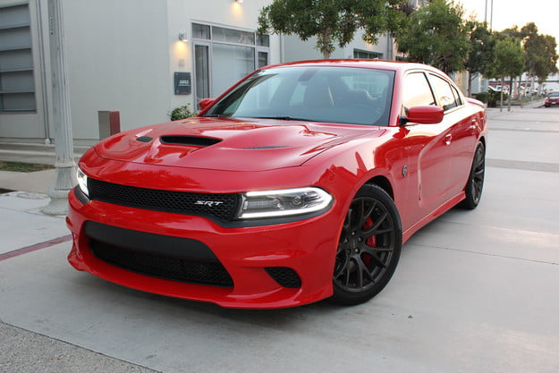

Dodge Charger
The Dodge Charger is a model of automobile marketed by Dodge in various forms over seven generations since 1966.
The first Charger was a show car in 1964.[1][2] A 1965 Charger II concept car had a remarkable resemblance to the 1966 production version.[3]
The Charger has been built on three different platforms in various sizes. In the United States, the Charger nameplate has been used on subcompact hatchbacks, full-size sedans, muscle cars, and personal luxury coupes. The current version is a four-door sedan.
The 1966 Charger was an effort by Dodge to produce an upscale, upsized pony car. American Motors had already built a very similar vehicle in 1965, the Marlin, which was positioned as a personal car, an emerging market niche.
Mercury was more successful in its execution in introducing the upscale Cougar, which was both considerably larger and more refined than the Ford Mustang that pioneered the pony car concept in 1964 - yet still had badly compromised rear seating.
The Charger was intended to up the ante to an even more expensive and luxurious coupe that featured all-bucket seating for four.
